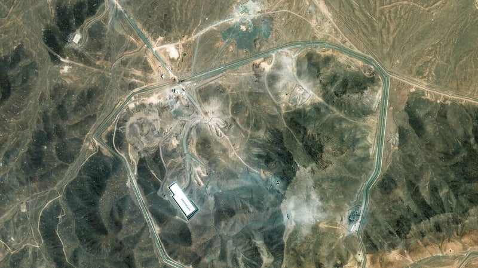

Bombs away - what happens in the aftermath of US attack on Iran?

You can actually understand why Donald Trump was a bit miffed about the public (i.e. media) reaction to last weekend's bombing raid on Iran. It actually was an astonishing feat of arms.
Don’t get me wrong - there absolutely is a need to critically review that operation, and the US media has mostly done the job it's supposed to: examine the official version, to see how public money is spent. And be in no doubt - this one cost billions.
And academics and think tankers did what they are supposed to do: think deeply on the consequences of the action. The various intelligence services did what they are supposed to do too: coldly assess information that the public does not have access to and report the line to political bosses. Sometimes that stuff gets leaked - for all sorts of reasons.
So yes, we’ll do a little bit of critical analysis of our own later.
But first - the mission. The details and the background are useful in assessing the usefulness or otherwise of the US intervention against Iran. Apparently, it's the first time the US has ever directly gone into battle on the Israeli side.
That in itself is remarkable, all the more so as the president campaigned on the promise of not allowing the US to be dragged into foreign wars. Yet dragged in, it was. And rather rapidly.
Lots of people in America pointed that out. And questioned the efficacy of the raid. That didn't please the president, who took it personally and his administration went on the offensive personally - targeting named reporters from a number of outlets, including CNN and Fox News.
At the NATO summit on Wednesday, he posted 28 times on social media complaining about the coverage. He also accused the media of disrespecting the bomber crews and other military who took part and downplayed the difficulty of the operation (in fact the media coverage did neither, but hey).
Defence Secretary Pete Hegseth went on the warpath on behalf of his boss, losing the last shreds of his coolness and composure at an ill-tempered press conference on Thursday, even denouncing a one-time colleague at Fox News by name (the reporter in question is a very highly-regarded 18-year veteran of the Pentagon beat).
How was the mission carried out?
But back to the mission. The highlight of that news conference on Thursday was the presentation by the Chairman of the Joint Chiefs of Staff, Air Force General Dan Caine, who gave a lot more of the background to the mission. And it goes a long way to explain the presidential umbrage of the previous days.
General Caine revealed that the bombing raid on Fordow was not something whistled up in a week by order of the Commander in Chief (let alone cogged from the plot of Top Gun: Maverick).
It was in fact a hugely-costly, incredibly-complex operation that has been fifteen years in the making.
WASHINGTON, DC - APRIL 01: Retired Lt. Gen. Dan Caine, President Trump's nominee to be Chairman of the Joint Chiefs of Staff, testifies during his Senate Armed Services Committee confirmation hearing on April 01, 2025 in Washington, DC. Caine, a retired Air Force General, was nominated by President
Chairman of the Joint Chiefs of Staff, Air Force General Dan Caine
He told us about the Defence Threat Reduction Agency (DTRA), a little-known annex of the Pentagon that is based in Fort Belvoir in North Virginia. Back in 2009 a DTRA officer was "brought into a vault at an undisclosed location and briefed on something going on in Iran", according to General Caine’s account.
"He was shown some photos and some highly classified intelligence on what looked like a major construction project in the mountains of Iran. He was tasked to study this facility, work with the intelligence community to understand it, and he was soon joined by an additional teammate."
These two individuals immersed themselves in what is now known to the world at the Fordow nuclear facility.
"For more than 15 years, this officer and his teammate lived and breathed this single target: Fordow, a critical element of Iran’s nuclear weapons program," General Caine said.
"He watched the Iranians dig it out. He watched the construction, the weather, the discard material, the geology, the construction materials, where the materials came from.
"He looked at the vent shaft, the exhaust shaft, the electrical systems, the environmental control systems—every nook, every crater, every piece of equipment going in, and every piece of equipment going out."
Pretty soon they realised that the US didn’t have a weapon capable of destroying such a facility.
Which of course is the point of burying it deep under a mountain.
So, the DTRA officers set about getting one that might do the job.
Which is how the US ended up with the "Bunker Busters", the 13 tonne bombs also known as Massive Ordnance Penetrator (MOP), or the more prosaic official designation, GBU-57.
General Caine revealed the MOP has been in development since 2004, but the Iran mission focused minds and sprang resources.
The top military advisor to the President revealed the massive investment in developing the technology: "In the beginning of its development, we had so many PhDs working on the MOP program doing modeling and simulation that we were quietly and in a secret way the biggest users of supercomputer hours within the United States of America."
"They tested it over and over again, tried different options, tried more after that.
They accomplished hundreds of test shots and dropped many full-scale weapons against extremely realistic targets for a single purpose: kill this target at the time and place of our nation’s choosing," the General said, and showed video of one of those tests.
And that is the only video we have seen so far.
A skeptical public is asking why haven’t they seen video of the actual raid yet?
No doubt the Pentagon wants to keep as much of its secrets as it can, at least until it thinks there is little an adversary can gain from its release (we are still not getting colour images of past bombings, because the military likes to strip out details).
PASADENA, CALIFORNIA - JANUARY 01: The B-2 "Spirit" Stealth Bomber flys over the 136th Rose Parade Presented By Honda on January 01, 2025 in Pasadena, California. (Photo by Jerod Harris/Getty Images)
The B2 bombers flew a 37-hour round trip from an airbase in Missouri
But with pilots in following planes reporting explosions "as bright as daylight", no doubt the public would like to see it too.
After all they paid for it. And judging by General Caine’s backgrounder, it didn’t come cheap.
Estimated development cost of the MOP was about half a billion dollars, with another $400 million in production contracts.
No wonder the US is reported to possess only 20 or 30 of these bunker busters. Now minus the 14 used last weekend. So, America has used either half or two thirds of its stash of bunker busters in just one raid.
Then there is the cost of the flying bit. The B2 bombers flew a 37-hour round trip from an airbase in Missouri, pretty much in the middle of the US.
And it's the hourly flying cost of planes that are the thing to watch. For the B2, the Pentagon reports it costs about $65,000 an hour.
That works out about $2.4 million per bomber. And there were seven of them, so that's $16 million and change.
In all, there were 125 aircraft of different sorts on the raid, ranging from a fleet of refueling tankers (modified versions of big passenger planes) to F-35 fighters, which cost $42,000 per hour to operate. (President Trump also said the F-22, Americas most advanced fighter also took part: the plane, which is not available to any US allies, costs a reported $80,000 per hour to operate).
General Caine said the analysts had identified two ventilation shafts at the Fordow site as being possible vulnerabilities that the bunker busters could use to get down to the underground factory where the Iranians are presumed to have operated centrifuges to enrich uranium.
This immediately set off some movie-related memes, as people recalled the plot of Star Wars. In fact, it was closer to Top Gun Maverick: "miracle one and miracle two", blowing a concrete cover off the ventilation shafts, then dropping the munition down the shaft, with a fuse set to detonate up to 100 metres below ground.
But unlike Top Gun, the bombers dropped not one, but five bunker busters down each of the two main ventilation shafts. That's five, 13 tonne, bombs, dropped from 13 kilometres up, entering a concrete tunnel a few metres wide. In two locations. Just think about that.
For contrast, consider the World War Two-era B-17 "Flying Fortress", each of which carried about four tonnes of bombs, only 20% of which fell within 300 metres of their targets.
So, for technical brilliance in the art of aerial warfare, this mission was amazing.
That said, the key point of the criticism remains valid too: we don’t know much about the impact of this mission on Iran’s nuclear programme.
Even behind closed doors briefings for Senators and Congressmen on Thursday by General Caine and the head of the CIA left us (and them) none the wiser. Party politics dominated the public comments afterwards: For Democrat Senator Chris Murphy, the raid has set back the Iranians by as little as three months: for Republican Senator Linsey Graham, its set the programme back many years.
Only President Trump and his political acolytes are using the word "obliterated", which is not a term of art used by military or intelligence professionals to formally describe the kinetic effects of ordinance.
What's next for Iran?
Pete Hegseth, the Defence Secretary, was right when he said the only way to know for sure is to get out a shovel and dig at Fordow. Which the Iranians may well do. If they find their structural defences worked as planned, and protected their stockpile of uranium presumed to be stored there, then they could get back in the nuclear game relatively quickly - if only to develop a so called "dirty bomb" to spread radioactive dust around an enemy city, contaminating rather than destroying it.
The big question for the Iranians is do they want to? Just as America has spent a fortune to incapacitate the Iranian nuclear programme, so too has Iran spent a much bigger fortune to start and sustain that programme.
And to fortify it in underground sites like Fordow cost vast amounts of money (there is another site, in somewhere called by Western Intelligence "Pickaxe Mountain", where another suspicious underground facility was reportedly close to coming into use in recent weeks).
WASHINGTON DC, UNITED STATES - JUNE 26: US Defense Secretary Pete Hegseth and US Chairman of the Joint Chiefs of Staff Dan Caine hold a joint press conference at the Pentagon press briefing room in Washington DC, United States on June 26, 2025. (Photo by Celal Gunes/Anadolu via Getty Images)
US Defence Secretary Pete Hegesth said the only way to know for sure is to get out a shovel and dig at Fordow
On his recent trip to the Middle East, President Trump took time to contrast the discontents of ordinary Iranians with the apparently more lavish lives of the Arab nations on the south side of the Persian Gulf.
While one oil rich state spent its liquid gold on nuclear weapons and funding proxy forces in Gaza, Lebanon, Syria, Iraq and Yemen - the other oil rich states behaved like oil rich states, and built glittering towers, bought football teams and tried to shift their economies (and their populations future prosperity) beyond oil and into new technologies.
Mr Trump held out the prospect of a similar boost to lifestyles and aspirations for the Iranians - but only if they give up their nuclear ambitions and stop trying to subvert neighbouring states. He didn’t call for regime change - no American officials have.
But they must hope that ordinary Iranians, having witnessed forty years of the Islamic Republic’s policy and billions of dollars in investments go up in smoke, will balk at the idea of just picking up and starting over with the same plan.
Of course, the most dangerous time for any repressive regime is when it starts to change, which inevitably means loosening its grip on society. Which may explain why Iran's supreme Leader, Ayatollah Ali Khamenei, is in no hurry to enter talks with the Americans on what happens next.
President Trump would like to begin talks next month, presumably picking up where his envoy Steve Witkoff left off. Much as he might wish it, it probably won't turn out to be that easy.
Amir Asmar, a former Middle East analyst for the US Department of Defence and now a scholar with the foreign policy think tank The Atlantic council, has outlined three scenarios for the Iranians, based on how much of their programme survived the Fordow raid.
In the first scenario, if the Fordow complex and its cascade of centrifuges - the machines that enrich the uranium to weapons grade - are damaged and not functional, Tehran may be forced to accept negotiated restrictions on its nuclear programme.
But if much of the machinery emerges unscathed, then in Asmar’s view "nothing short of endangering the regime itself would cause Tehran’s present leaders to permanently abandon decades of commitment to an indigenous nuclear programme".
Hence his conclusion that a partially damaged Fordow will only trigger at best a pause – in both Iran’s nuclear programme, and in Israel’s efforts to smash it.
Further attacks, he feels, would be inevitable, with or without US involvement.
In a second scenario, Asmar posits the total destruction of Fordow, with none of its highly enriched uranium stock surviving.
In this case he thinks the Iranian leaders would calculate they cannot benefit from holding out in nuclear talks because it would take many years (and tens of billions in oil revenues) to reconstitute the programme, and its ballistic weapons programme, which has also been badly smashed up.
And as everybody is watching, any efforts to restart the programmes would probably be easily spotted and would probably lead to Israeli raids at the very least.
He says compliance would require even more intrusive monitoring by the UN’s International Atomic Energy Agency.
Iran considers withdrawing from Nuclear Non-Proliferation Treaty
That agency’s head, Rafael Grossi, said the centrifuge machines at Fordow and elsewhere are "extremely vibration-sensitive", and given the huge explosive effects unleashed by the B2 Raid, "very significant damage is expected to have occurred".
But Iran’s parliament has already begun steps to end Iran’s membership of the IAEA and prevent the inspections that come with it. Iran is also considering withdrawing from the Nuclear Non-Proliferation Treaty, which commits signatories to not acquire nuclear weapons, and subjects them to IAEA inspection in return for access to nuclear technology for energy and other peaceful purposes.
Although Iran’s extensive development of nuclear facilities that go far beyond peaceful means suggest it was not adhering to the NPT anyway (enriching uranium to 60% is far beyond the needs of a nuclear energy programme), the treaty has other practical uses.
It provided the legal justification necessary for the UN Security Council’s sanctions on Iran.
Without the NPT Iran’s only legal barrier to developing a nuke would be Ayatollah Khamenei's fatwa against it. Iran could easily leave the NPT and develop a bomb without the prying eyes of the IAEA.
Writing in The Atlantic magazine, Thomas Wright, who served as senior director of strategic planning at the National Security Council during the Biden Administration, claimed this was the main problem with the Presidents insistence that the Iranian nuclear programme had been "obliterated".
"Trump could have managed that risk by telling the public that although the strikes appeared to have been successful, fully ascertaining their results would take time.
"He could then have insisted on a week-long cease-fire for the purpose of concluding a diplomatic agreement with Iran - one that would have insisted on limits to Iran’s nuclear programme and continued access for the IAEA, whose inspectors remain in Iran but have not been admitted into nuclear sites.
"Given the likely damage done to the programme, he could have afforded to stop short of demanding full dismantlement and settled instead for strict limits on enrichment, as well as round-the-clock inspections with no expiration date.
"But Trump took a very different path by declaring the problem fully solved and not using the moment of leverage to extract commitments from Tehran. Tensions between Washington and Jerusalem seem all but inevitable in the aftermath of this choice," he wrote.
The danger of a half-done job - or worse, scarcely inflicting any damage at all - is that Iran’s Supreme leader decides to go for broke, speeding up development of an A-Bomb and detonating one - to show adversaries Iran is in the nuclear club and deter future attackers.
The long-term prospects for regional security and stability would be destroyed.
From Gaza to Yemen, Kurdistan to Afghanistan the likelihood of a grand bargain to bring peace to this most troubled of regions would slip further away. This is precisely the opposite of what the attacks were intended to achieve.
No wonder the effectiveness of the raid has been such a touchy subject for the President. There may be a ceasefire - but now what?
More stories on
NewsAnalysis and CommentMiddle EastUSWorld